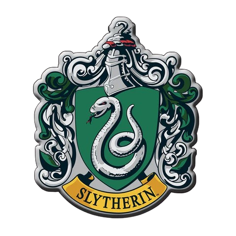

<html></html>
<head>
    <title>Hogwarts - Serpeverde</title>
    <link rel="stylesheet" href="style.css">
    <meta name="viewport" content="width=device-width, initial-scale=1.0">
</head>
<body>
<center>


<div>
<table>
<tr>
<td></td>
</tr>
</table>
</div>

<div id="nav">
    	
    <center>
    <a href="index.html">Home</a>
    <a href="chi_siamo.html">Chi Siamo</a>
    <a href="contatti.html"><u>Contatti</u></a>
    <a href="account.html">Account</a>
    </center>
    
</div>

<div>

<h1 style="text-transform: uppercase; padding-top: 300; padding-bottom: 200;">Potete inviare un gufo alla segreteria della scuola di magia e stregoneria di Hogwarts dal lunedì al venerdì dalle <u>8:00</u> alle <u>20:00</u> </h1>

<h2>In alternativa potete contattare il professor Horace Lumacorno inviando una mail all'indirizzo: <a href="mailto:horacelumacorno13@gmail.com">horacelumacorno13@gmail.com</a></h2>

</div>

</body>

<footer>
Diritti riservati Slythrin©
</footer>
</html>